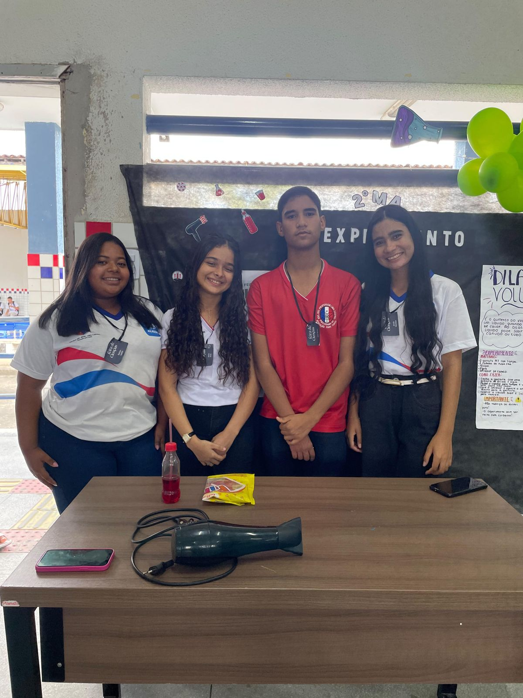

Experimento
Dilatação volumétrica
A dilatação volumétrica é o aumento do volume de um corpo quando sua temperatura aumenta. Geralmente, ao esfriar, seu volume diminui. Esse fenômeno ocorre em sólidos, líquidos e gases.